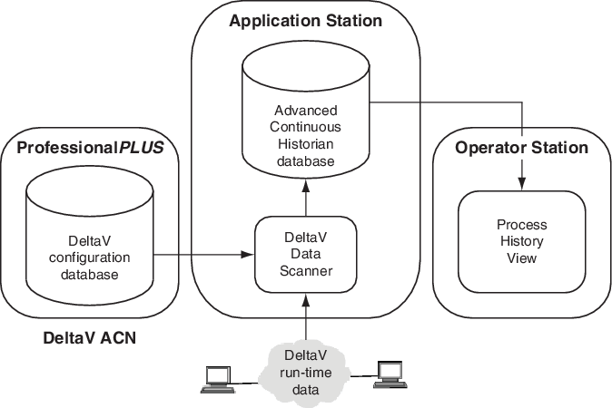
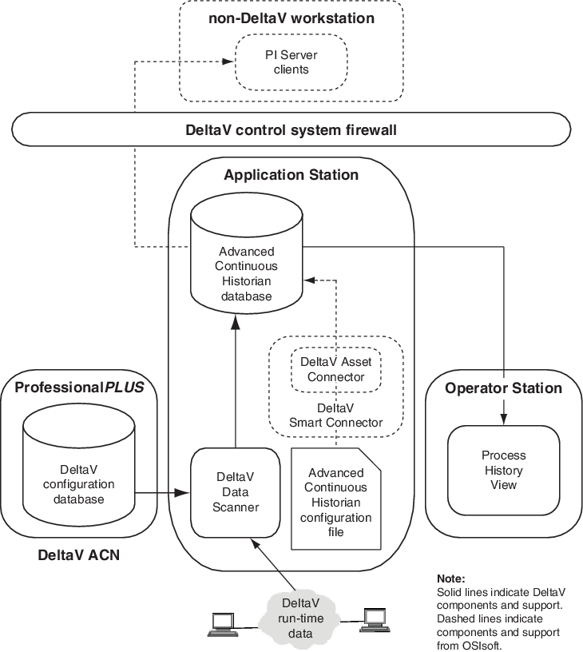

Advanced Continuous Historian architecture
The Advanced Continuous Historian uses a combination of technology from Emerson and OSIsoft. The Advanced Continuous Historian database and DeltaV system interface components use OSIsoft technology. The Advanced Continuous Historian configuration and data provider components use Emerson technology.
The following diagram illustrates the basic configuration of a DeltaV system with the Advanced Continuous Historian installed on an Application Station:

By using the optional DeltaV Smart Connector to collect data from the DeltaV system, the Advanced Continuous Historian can be configured to interface with an enterprise historian installed on a non-DeltaV workstation as illustrated in the following diagram:

For more information about the DeltaV Asset Connector and DeltaV Smart Connector, refer to PI Asset Connector for Emerson DeltaV (C:\Program Files(x86)\PIPC\Asset Connectors\DeltaV\PI_DeltaV_ACtr.pdf) and PI Smart Connector for Emerson DeltaV (C:\Program Files(x86)\PIPC\SmartConnectors\DeltaV\PI_DeltaV_SC.pdf).